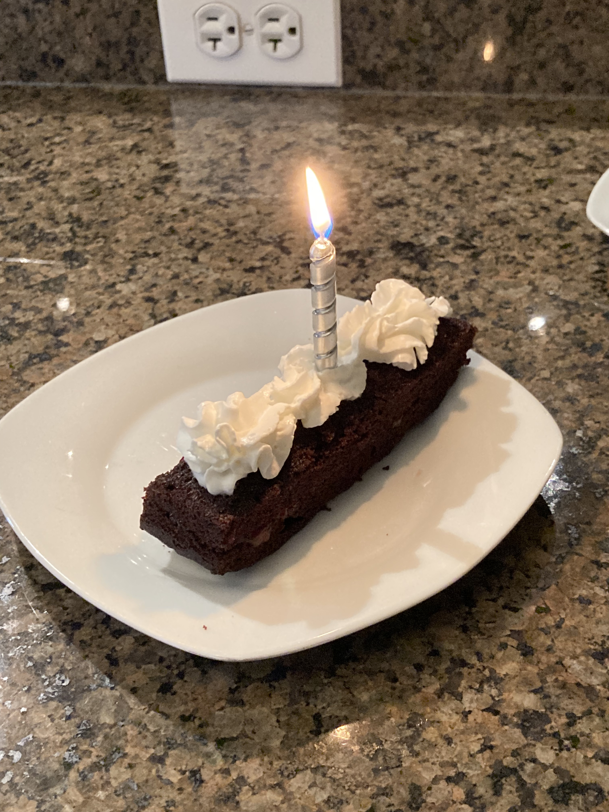

This is my favorite chocolate cake recipe. It is delicious and requires no eggs or milk and can be made in just one bowl!
Source: King Arthur's Flour
Here is the final product! Tastes great with cherry jam and whipped cream for a cheaper alternative to black forest cake.
